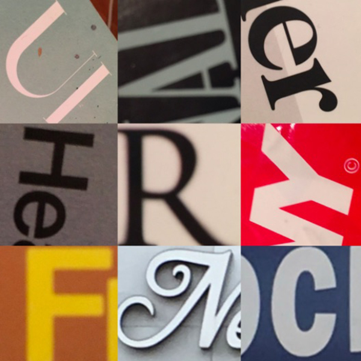
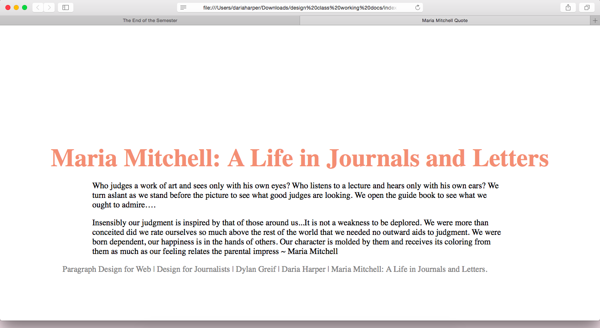
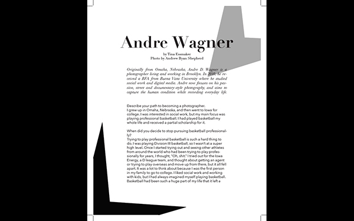
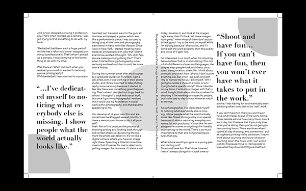
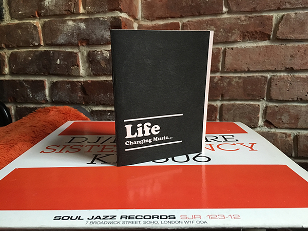
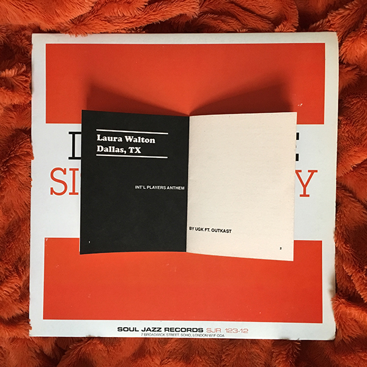

The "Design for Journalists” course combines two disciplines — graphic design and journalism — and explores them in the context of the other. We are introduced to both by strengthening our understanding of how they rely on one another in our creative and professional practices. The course is segmented in three parts: Foundations in Form, Making Meaning, and Digital Contexts.
This assignment required us to go outside with a camera and look for examples of 6 different type classifications: humanist serif, rational serif, slab serif, grotesque sans serif, geometric sans serif, script. We then had to arrange the selected pictures on a 3x3 grid and create a matching quiz for our classmates to complete. The quiz allowed them to guess which of the 6 type classifications were pictured.
For my assignment, I used some photos of type classifications that I saw on signs as I was walking around. I also used some photos of type from books that I have at home to contribute to my collage. I wanted the colors to be vibrant and contrasting so that there were clear differences for the person taking the quiz. I chose my type at random based on what I could find around me. I included each of the different type classifications and repeated 3 of them because we had to have a total of 9 squares to fill on our grid.
This is a photo of the grid that I made for the 'Hunt for Type' assignment.
For this assignment, we were required to find 1 inspiring quote, varying from 500 – 1000 characters long, then lay out and design the quote as a web page. We used the html and css skills that we learned in class to complete this assignment. Each quote includes a header, a lede that introduces the quote, the quote itself, and an attribute. The web page had to include different styles and different elements applied in a way that made sense for the design.
This project was difficult for me, because I did not have a vlear grasp on html and css coding for web. That said, my assignment was very simple and mainly consisted of me making minor adaptations to my stylesheet. I kept to a black and white theme and used a simple serif typeface. The real change that I made was to the font size.
This is a screenshot of my webpage for the 'Paragraph Design for Web' assignment.
This assignment required us to choose an interview from The Great Discontent website and scrape the text to redesign the article as a print layout. The layout had to be in spread format, at least 3 pages long, and each page dimension had to be 6.5" wide x 9" high. The layout also had to incorporate all parts of the article’s anatomy including: title, byline, deck, introductory body text, pull quotes, captions.
I chose an interview from the The Great Discontent Website on a photographer named Andre Wagner. For the design, I decided to challenge myself to only using black and white. I thought this fit well with the tone of the interview, and it made me think more creatively. The typeface I used for this was Didot Pro because I wanted it to have a sleek, traditional editorial look. I organized the pulll quotes based on grids in InDesign and gave it a different line spacing from the other text so that it would have a graphic effect.
This is the title page for my 'Paragraph Design for Print' assignment.
These are the additional pages of my 'Paragraph Design for Print' assignment.
For this assignment we designed and printed the very first issue of a zine. We decided on the Subject matter, Audience, Distribution, Values, Visual Design, and Anatomy. The zine had to include: a front and back cover, a masthead, an editor’s letter, 1 front matter article, 1 feature article, 1 back-matter article. The zine could be any size smaller than 9.5" height x 7.5" wide. The binding had to be single-signature bound (via saddle staple, saddle stitch, or rubber band).
Life Changing Music is a zine about the power that music has and the lasting impact that it leaves on our lives. The front cover of this zine is simple, yet bold since I used a black as the color. I chose to use Cooper Black as the main/recurring font for the zine because I love the retro design feel that it creates. This type makes a strong focal point for the front cover. The back cover is quirky and features an image of Garfield the Cat. I chose to use this cartoon as my back cover because the font used for Garfield was originally Cooper Black. As I was researching famous design or ads that used Cooper Black, I found Garfield and thought it would be fun to add. Dylan also mentioned that back cover is a space to have a bit of fun.
The masthead of my zine includes me and one other contributor as a creative consultant. I have short interviews with people, but aside from those I wrote and designed everything. The editor’s letter for my zine is straight-forward and invites readers of the zine to reflect on their own experiences that relate to the topic of this zine. I think that you can learn a lot about someone and spark great discussion by learning what music has shaped and greatly influenced them. The ‘front matter article’ for this zine will be a short blurb/reflection about the importance of art and music that changed my life in some way. In this essay, I share a bit more about the music that has been life-changing to me.
Rather than one feature article and one back matter article, my zine includes three separate interviews where people explain a song or album that changed their life. Each of the three interviews varies in length and includes a sort of intro page that introduces the Interviewee and the song that they chose to share. I want this zine to be distributed at a park, because people like to read at the park and it would be fun to offer park attendees something to enjoy while they relax.
This is a product shot of the cover of myy zine.
Here is product shot of a spread from my zine.
I learned so many useful skills from each of the assignments throughout this course, but the Zine Project had the most impact on me and meant the most. I know that moving forward, I will be able to use many of the skills that I learned while working on the zine. From getting a strong since of how to use InDesign, to understanding the print and production process, I feel like I have a better grasp on how to produce a zine all by myself. I wanted to make a zine for a class in the past, but was not quite sure how to go about it, and ended up scrapping the whole project. Now, I feel very comfortable creating a zine, whether it is for an academic assignment or for my own personal project. I am very proud of the work that I did for the Zine Project and will definitely be adding it to my portfolio of work.